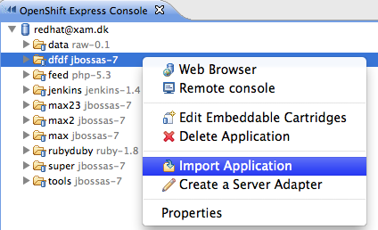

OpenShift Express Console
OpenShift Express console is a view where you can get easy access to your existing OpenShift accounts and applications. Actions in the context menu allow you manage your user accounts, domains, applications, embedded cartridges etc.

Right click on Applications for easy access to common operations.

These operations currently include:
- Web Browser - opens the rhcloud.com url for the application.
- Remote Console - opens the remote console for the application - this tails the logging files for your application.
- Edit embeddable Cartridges - allow you to add/remove cartridges from your application.
- Import application - starts the OpenShift wizard preconfigured to import the selected application
- Create a server Adapter - setup a server adapter for the applictation
- Properties - shows the properties view


Creation and Import Wizards

You can also choose to use an existing application.

Using the Browse... button you can choose from existing applications.


When you use an existing project what happens behind the scenes is that the project contents gets merged with the key metadata files from the OpenShift application and you can then deploy your own local application into OpenShift.
OpenShift Server
In M5 the server adapter was only created when importing an OpenShift application. Beta1 improves this a lot and allows you to create the server adapter independently of the application import.
Choose Create a Server Adapter in the context menu of the OpenShift Express Console and here you go, you get a fresh adapter for your existing OpenShift application.


The new OpenShift Server Adapter is not bound to JBoss AS7 any more, it has no runtime connection.
You may therefore use it to publish to any OpenShift application. The prior limitation that restricted you to publish to jbossas-7 applications only, is gone.

The new OpenShift Server adapter is now able to publish source and binary artifacts.
When you create the adapter, it will be associated to a git enabled OpenShift project in your workspace.
This project is used as the "source" deployment, thus any changes within this project is expected to be built via OpenShift source build process when git push occurs.
In addition we now also support you to
drag any existing deployable artifact
such as WTP projects, deployable
datasources etc. to the OpenShift
server. If these artifacts are not
part of the "source" project the
server adapter will package them up
and place by default inside the
/deployments folder of
the project. Then when git push occurs
these binaries will be part of the
deployments on OpenShift for the
"source" project.
This is what we call "binary" deployment and is useful for applications that for any reasons or another cannot be build remotely.
Note: OpenShift have a storage limit thus storing to many binaries or doing too many binary changes will make you reach this limit faster so be careful.